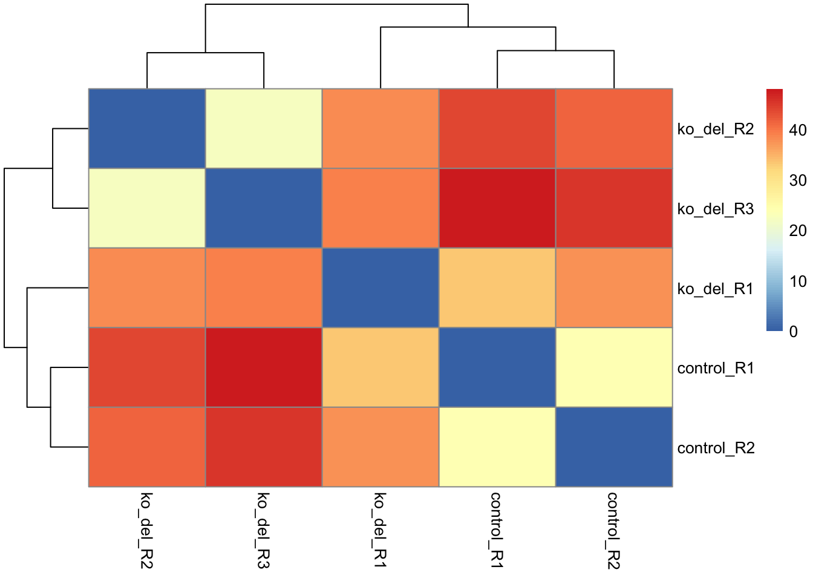
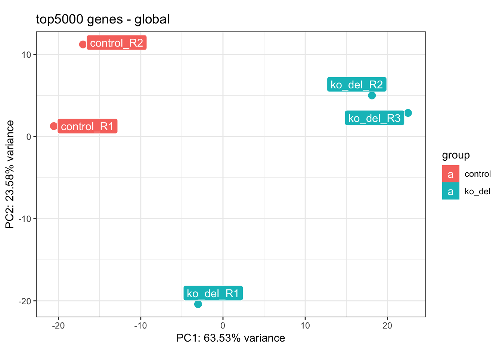
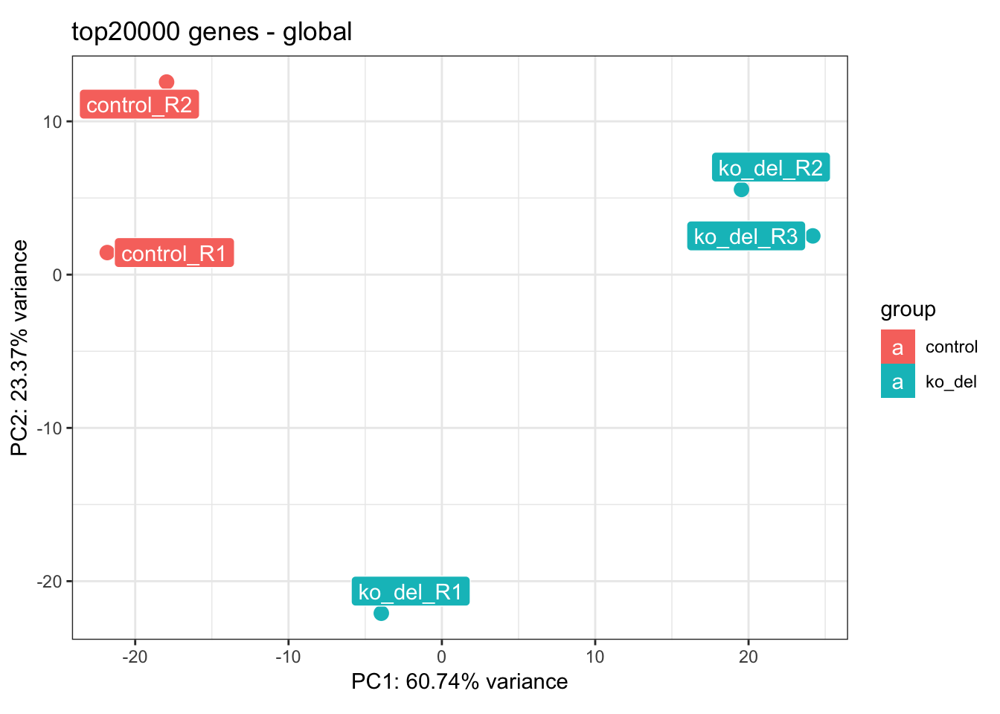
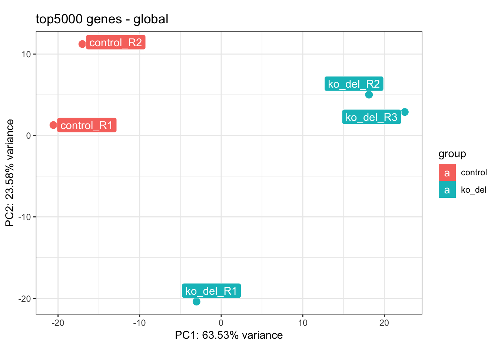
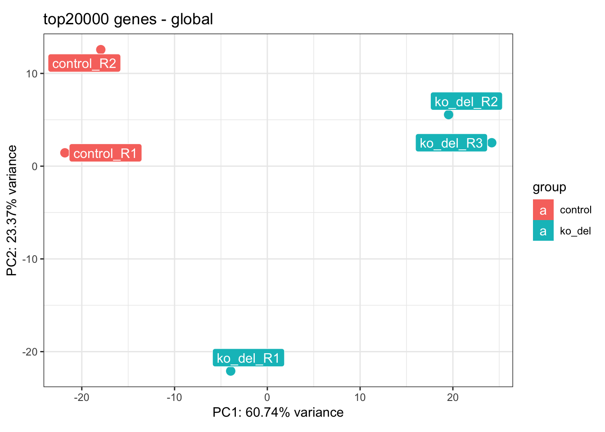
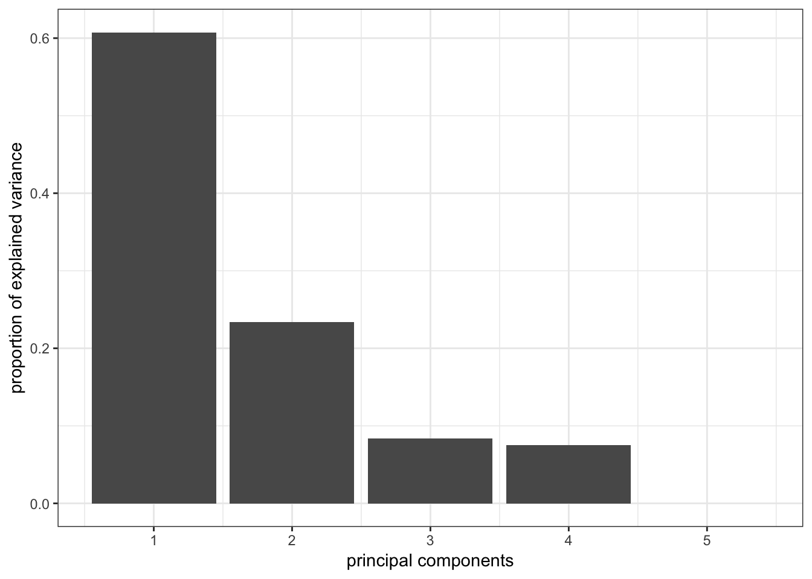
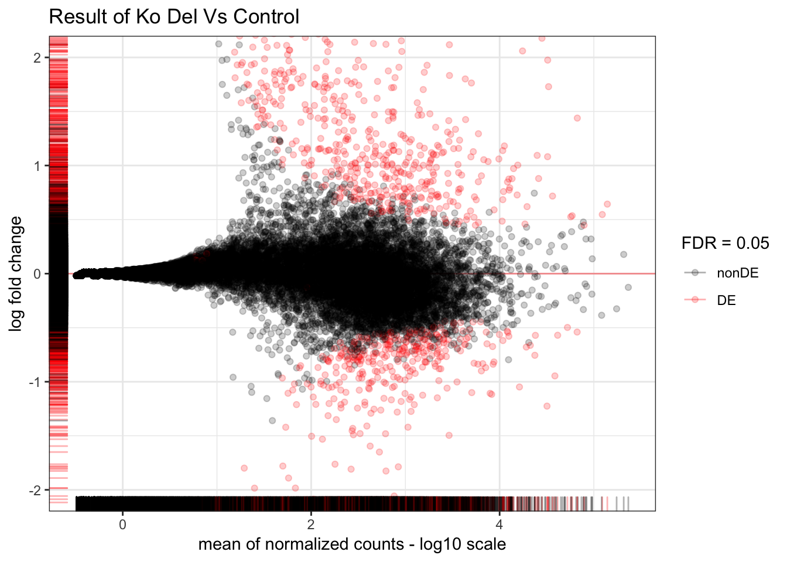

Exploratory Data Analysis on [Researchers Name]’s data
ProjectID [ProjectID] - [list researchers name] [bioinformaticians name]- Institute of Medical Biostatistics, Epidemiology and Informatics (IMBEI) - [email]@uni-mainz.de University Medical Center - Mainz (Germany)
9 November 2018
1 Introduction
path_to_ref_genome <- "/Users/franziska/Documents/Intro_rna_seq/data/human/GRChr38/annotation/Homo_sapiens.GRCh38.77.gtf"
is_paired_end <- c("paired-end" = FALSE, "single-end" = TRUE)
design_formula <- as.formula("~ condition")
test_for <- "ko_del_vs_control"
organ_dataset <- "hsapiens_gene_ensembl"RNA-seq samples were derived from [source_samples], obtaining a total of 5 different samples. More on the specific design is in the main sections.
For more information and an overview, see the figures and the tables in the main text.
All samples were sequenced with reads of [???] nucleotides, using a single-end library preparation (unstranded sequencing kit).
This report provides a detailed overview of the steps taken to perform a comprehensive exploratory data analysis.
library("DESeq2")
library("ggplot2")
library("ideal")2 QC of the sequencing samples
An overview of the sequenced samples is obtained with the FastQC tool (available at http://www.bioinformatics.babraham.ac.uk/projects/fastqc/). Inspecting the produced results, the quality is in line with good datasets.
3 Alignment to the reference genome
Short reads alignment was performed with the ENSEMBL Homo_sapiens.GRCh38.77 chosen as the reference genome. The corresponding annotation (ENSEMBL v76) was also retrieved from the ENSEMBL FTP website http://www.ensembl.org/info/data/ftp/index.html.
The STAR aligner ([version number]) was used to perform the mapping to the reference genome.
4 Overview and creation of the count table
The available samples were reconstructed from the shared archive files. The raw .fastq files are available in compressed .gz format in the _fastqFiles folder.
The following samples are the relevant ones:
list.files("_alignedData/",pattern="(h_).*.bam$")## character(0)Following the read mapping step, we proceeded working with .bam files. We processed them with the featureCounts function of the Rsubread package, using the annotation file we also used for supporting the alignment.
(bam_files <- list.files("_alignedData/",pattern="(h_).*.bam$",full.names=TRUE))
fc_result <- Rsubread::featureCounts(files=bam_files,
annot.ext=path_to_ref_genome,
isGTFAnnotationFile=TRUE,
nthreads=parallel::detectCores()/2, isPairedEnd=is_paired_end["paired-end"])
save(fc_result,file="results/fc_result.RData")5 Creation of the design matrix and sample info
samplesDesign <- data.frame(
fastqfile = list.files("_fastqFiles",pattern = ".fastq.gz$", full.names = TRUE),
bamfile = list.files("_alignedData/",pattern = ".bam$", full.names = TRUE),
condition = c("control", "control", "ko_del", "ko_del", "ko_del"),
replNr = paste0("R",c(1,2,1,2,3)),
partner = "Alma",
stringsAsFactors = FALSE
)
samplesDesign$sampleID <- paste0(samplesDesign$condition,"_",samplesDesign$replNr)
samplesDesign$sampleName <- samplesDesign$sampleID
write.csv(samplesDesign, file = "data/samplesDesign.csv", row.names = FALSE)load("results/fc_result.RData")
samplesDesign <- read.csv("data/samplesDesign.csv")
samplesDesign$bamfile <- gsub("X_alignedData.","",colnames(fc_result$counts))
knitr::kable(samplesDesign)| fastqfile | bamfile | condition | replNr | partner | sampleID | sampleName |
|---|---|---|---|---|---|---|
| _fastqFiles/Alma_1.fastq.gz | Alma_1_Aligned.out.bam | control | R1 | Alma | control_R1 | control_R1 |
| _fastqFiles/Alma_2.fastq.gz | Alma_2_Aligned.out.bam | control | R2 | Alma | control_R2 | control_R2 |
| _fastqFiles/Alma_3.fastq.gz | Alma_3_Aligned.out.bam | ko_del | R1 | Alma | ko_del_R1 | ko_del_R1 |
| _fastqFiles/Alma_4.fastq.gz | Alma_4_Aligned.out.bam | ko_del | R2 | Alma | ko_del_R2 | ko_del_R2 |
| _fastqFiles/Alma_5.fastq.gz | Alma_5_Aligned.out.bam | ko_del | R3 | Alma | ko_del_R3 | ko_del_R3 |
6 Samples exploration and assessment
We construct the dds objects which will contain all the required info for testing
counts <- fc_result$counts
dds <- DESeqDataSetFromMatrix(counts, samplesDesign, design = design_formula)
colnames(dds) <- samplesDesign$sampleID
rld_dds <- rlogTransformation(dds)Remove all the rows where no signal could be detected at all:
dds <- dds[rowSums(counts(dds)) > 1, ]
nrow(dds)## [1] 18877The regularized log transformed values were used to perform sample clustering and principal component analysis (PCA).
pheatmap:::pheatmap(as.matrix(dist(t(assay(rld_dds))))) [Comment on heatmap]
Create the PCA plots of all three datasets, again for comparison:
top_genes <- c(500, 5000, 20000)
for (g in top_genes) {
print(pcaExplorer:::pcaplot(rld_dds, ntop=g, title = paste0("top", g, " genes - global"), ellipse = F))
}  [Comment on PCA plot]
 [Comment on PCA plot]
pcaExplorer::pcascree(prcomp(t(assay(rld_dds[,])),center = T))
7 Differential Expression analysis
FDR <- 0.05We set the False Discovery Rate to 5%, and perform the following steps, we obtain the full set of Differentially Expressed genes, i.e. the ones that (regardless of the lfc) show robust significant differences in the expression among conditions.
dds <- DESeq(dds)## estimating size factors## estimating dispersions## gene-wise dispersion estimates## mean-dispersion relationship## final dispersion estimates## fitting model and testing7.0.1 Ko Del Vs Control
resultsNames(dds)## [1] "Intercept" "condition_ko_del_vs_control"res_condition <- results(dds, name = paste0("condition_", test_for),
alpha = FDR)
res_condition <- lfcShrink(dds, coef = paste0("condition_", test_for),
type = "apeglm", res = res_condition) ## using 'apeglm' for LFC shrinkage. If used in published research, please cite:
## Zhu, A., Ibrahim, J.G., Love, M.I. (2018) Heavy-tailed prior distributions for
## sequence count data: removing the noise and preserving large differences.
## bioRxiv. https://doi.org/10.1101/303255summary(res_condition)##
## out of 18877 with nonzero total read count
## adjusted p-value < 0.05
## LFC > 0 (up) : 669, 3.5%
## LFC < 0 (down) : 342, 1.8%
## outliers [1] : 3, 0.016%
## low counts [2] : 6222, 33%
## (mean count < 6)
## [1] see 'cooksCutoff' argument of ?results
## [2] see 'independentFiltering' argument of ?resultsplot_ma(res_condition, ylim = c(-2,2), title = paste("Result of", stringr::str_to_title(
stringr::str_replace_all(test_for, pattern = "_", " "))), FDR = FDR)
tbl_res_condition <- deseqresult2tbl(res_condition)
tbl_res_alma_ko_vs_ctrl$geneSymbol <- anno_df$gene_name[match(tbl_res_alma_ko_vs_ctrl$id, anno_df$gene_id)]
tbl_res_alma_ko_vs_ctrl$description <- anns$description[match(tbl_res_alma_ko_vs_ctrl$id, anns$ensembl_gene_id)]
mart <- biomaRt:::useMart(biomart="ENSEMBL_MART_ENSEMBL", host="www.ensembl.org", dataset=organ_dataset)
anns <- getBM( attributes = c("ensembl_gene_id", "external_gene_name", "description"), filters = "ensembl_gene_id", values = rownames(dds_marie), mart = mart)
anns <- anns[match(rownames(dds_marie), anns[, 1]), ]
anno_df <- pcaExplorer::get_annotation(dds_marie,"hsapiens_gene_ensembl","ensembl_gene_id")
tbl_DEres_marie_inside_vs_outside <- deseqresult2DEgenes(res_marie_inside_vs_outside,FDR = FDR)
tbl_DEres_marie_inside_vs_outside$geneSymbol <- anno_df$gene_name[match(tbl_DEres_marie_inside_vs_outside$id, anno_df$gene_id)]
tbl_DEres_marie_inside_vs_outside$description <- anns$description[match(tbl_DEres_marie_inside_vs_outside$id, anns$ensembl_gene_id)]
etbl_DEres_marie_inside_vs_outside <- tbl_DEres_marie_inside_vs_outside
etbl_DEres_marie_inside_vs_outside$id <- ideal:::createLinkENS(etbl_DEres_marie_inside_vs_outside$id, species = "Homo_sapiens")
etbl_DEres_marie_inside_vs_outside$geneSymbol <- ideal:::createLinkGeneSymbol(etbl_DEres_marie_inside_vs_outside$geneSymbol)
mybuttons <- c('copy', 'csv', 'excel', 'pdf', 'print')
datatable(etbl_DEres_marie_inside_vs_outside,caption = "petridish_tumor_vs_primtum, DE genes",escape=F, extensions = 'Buttons', options = list(pageLength = 50,dom = 'Bfrtip',buttons = mybuttons))7.0.2 Get Gene Names and Annotations
bla <- 07.0.3 Result of Ko Del Vs Control
tbl_res_condition <- deseqresult2tbl(res_condition)
tbl_res_alma_ko_vs_ctrl$geneSymbol <- anno_df$gene_name[match(tbl_res_alma_ko_vs_ctrl$id, anno_df$gene_id)]
tbl_res_alma_ko_vs_ctrl$description <- anns$description[match(tbl_res_alma_ko_vs_ctrl$id, anns$ensembl_gene_id)]